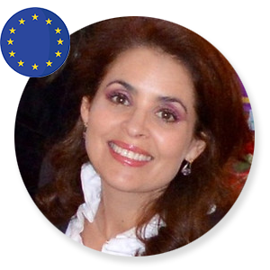
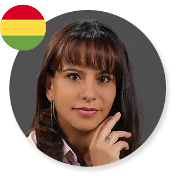
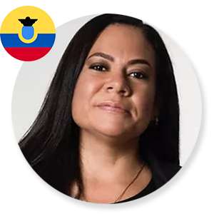
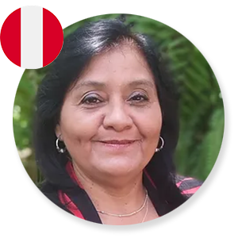
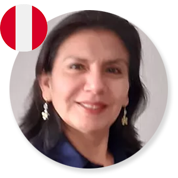
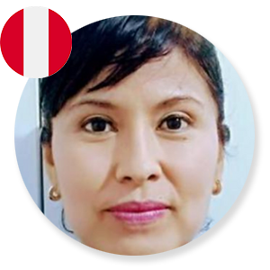
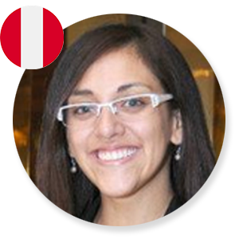

Vivian Peró Finke
Unión Europea
Ver Bio
MSc Community Health and Health Management Heidelberg-ALEMANIA. PsicoTerapia de Parejas y sexualidad. 25 años de experiencia salud Mental. Es Coach Profesional y Educativo 2018. Mediación y resolución de conflictos 2019. Certificación ICF – ACC 2020. Formación Teilen Team 2021.
Isabel Dejo Bendezú
Estados Unidos
Ver Bio
Conciliador de Familia. Conciliador Extrajudicial. Coach ICF. Formación Teilen Team. Con entrenamiento en aplicación de herramientas en Terapia de Parejas y Familia. Administrador con alta experiencia en intervención empresarial, gestión de ventas y cobranzas. Entrenamiento a equipos de trabajo multidisciplinarios.
Guido Arancibia Avilés
Bolivia
Ver Bio
M.B.A. Gestión y Dirección de Empresas. Ingeniero Comercial. 21 años de Experiencia profesional formada en las áreas: comercial, docencia,logística, coaching, liderazgo y entrenamiento de equipos. Coach Profesional y Gestor de Equipos con certificación ACTP.
Mirtha Araujo Camacho
Bolivia
Ver Bio
Licenciada en Comunicación Social. Más de 20 años de experiencia en el área Comercial Corporativo de empresas Privadas y Gubernamentales. Coach Profesional y Educativo con certificación ACSTH- ICF. Mediadora de conflictos con certificación CCE - ICF. Facilitadora de Constelaciones Familiares.
Raquel Paja Valeriano
Bolivia
Ver Bio
Médico cirujano. Instructora NAEMT y ECSI en Cruz Roja Boliviana Filial El Alto. Coach profesional y educativo ACSTH – ICF. Mediadora de conflictos CCE-ICF.

Chiara Olivares Godoy
Bolivia
Ver Bio
Licenciada en Bioquímica. Coach Educativa con certificación ACSTH y Coach Espiritual. Terapeuta Integral y Sanación energética.

Claudia Kakiuchi Torres
Bolivia
Ver Bio
Licenciada en comunicación social. Actualmente ejecutiva de atención al cliente con más de 10 años de experiencia de trabajo en empresas muy reconocidas dentro de mi país. Certificada como coach profesional y manejo de equipos. Certificada con diplomado en educación superior.
Fernando Castro Quisbert
Bolivia
Ver Bio
CEO & FOUNDER de DESHAB para el Desarrollo de Habilidades. SOCIO PROPIETARIO de ALFIL para Asesoramiento Legal y Financiero. DOCENTE UNIVERSITARIO en UBI Universidad Boliviana de Informática. FACILITADOR en COACHEART “Escuela de Coaching Profesional”. Experiencia de 12 años en el sistema bancario en cargos ejecutivos.
Mónica Moreno Rodríguez
Colombia
Ver Bio
Licenciada en educación infantil especial, especialista en ADMON, Gerencia de Instituciones Educativas y Evaluaciones Pedagógicas. Coach profesional y educativo con metodologías ágiles y Coach en Negotiation and Mediation for conflicte resolution.
Eliana Toro Vásquez
Colombia
Ver Bio
Especialista en Gerencia Educativa y gestión de proyectos. Coach Profesional y Educativo. Metodologías ágiles por la ACSTH- ICF. Negotiation and Mediation for Conflict Resolution. Identificación y desarrollo de habilidades sociales.
Ana Ortiz Arroba
Ecuador
Ver Bio
Licenciada en Educación Inicial. Coach Profesional Educativa. Mediadora y Consteladora Familiar.

Paola Traverso Holguin
Ecuador
Ver Bio
Consultora Estratégica para empoderamiento y desarrollo de personas, equipos y organizaciones. Docente Universitaria.
Coach Profesional y Gestora de Equipos de trabajo. Escritora
Gimena Rodríguez Colantonio
Argentina
Ver Bio
Directora Escuela Internacional Coacheart. Docente y mentora de Coaches Profesionales. Profesional de la ICF con credencial PCC. Acompaño procesos de desarrollo personal con diferentes técnicas. Administradora de Recursos Humanos y Analista en Relaciones Públicas e Institucionales.

Sheritl Carballo Soza
Nicaragua
Ver Bio
Licenciada en Administración de Recursos Humanos. Post grado en Administración de Proyectos. Actualmente Directora de Creser y Gestora de Transformación de equipos e individuos. Coach Certificada en Coaching Profesional y Gestora de Equipos ACTP. Certificada como Coach Vocacional.

María Arteta Figueroa
Perú
Ver Bio
Médico Veterinaria, Coach Profesional y Gestora de Equipos, Coach Deportiva del Equipo de Futbol Femenino en Academia Deportiva Cantolao.

Miluska Montalvo Moreno
Perú
Ver Bio
Doctora en nutrición. Especialista en nutrición clínica - Enfermedades crónicas no transmisibles. Coach ACC acreditada por la ICF. Docente de postgrado. Asesora de tesis.

Eliana Sánchez Rodriguez
Perú
Ver Bio
Gestor Deportivo, actual Jefe de Desarrollo Humano en el Club Alianza Lima.
Certificada por la Universidad Antonio Ruiz de Montoya en el Programa de Coaching Profesional y Gestión de equipos. Certificada en el Programa de Mediación y Negociación de Conflictos (CCE-ICF). Con formación en gestión deportiva y administración.
Rogelio Martínez Arízaga
Perú
Ver Bio
Contador Público Colegiado Certificado, Auditor Independiente, Perito Contable, Coach educativo, Mentor en Usaid, Master Speaker, Senador Inter, de la CIC, PG en Administración y Finanzas, PG en Marketing Empresarial, PG en Tributación, PG en Pedagogía Universitaria, Master en Cooperación Internacional y Desarrollo de Pueblos.

Lucía Arana López
Perú
Ver Bio
Directora de Programas. Facilitadora de procesos de transformación social y personal. Coach certificada por la ICF. Experiencia en coaching y mentoría. Lic. en Economía con amplia experiencia en desarrollo, gestión, monitoreo y evaluación de proyectos. He realizado talleres, pasantías y formaciones en más de 10 países. Tengo especial interés en educación, desarrollo organizacional, innovación, derechos humanos.